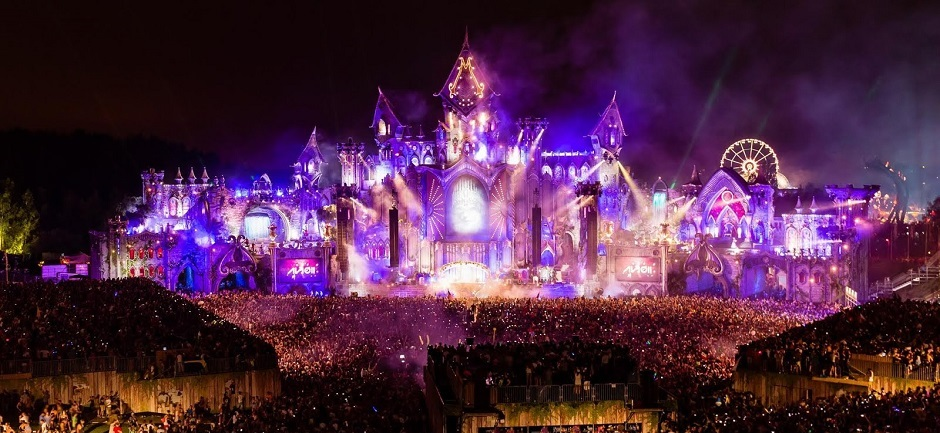

Wyjątkowe Festiwale Świata



tomorrowland
Tomorrowland − festiwal muzyki elektronicznej organizowany przez Q-dance, ID&T oraz Media Enterprise. Odbywa się w miejscowości Boom, niedaleko Antwerpii w Belgii. Pierwszy raz festiwal zorganizowano w 2005 r. W dniach 18-20 oraz 25-27 lipca 2014 odbyła się dziesiąta, jubileuszowa edycja. Wystąpili na niej tacy artyści jak: Afrojack, Above & Beyond, Armin van Buuren, Basto, Carl Cox, Dannic, Dimitri Vegas & Like Mike, Ferry Corsten, Sander van Doorn, Swedish House Mafia, Avicii, Hardwell, Martin Garrix, Nicky Romero, Laidback Luke, Paul van Dyk, Tiësto, David Guetta, Steve Aoki, Skrillex, Knife Party, Benny Benassi, Ørjan Nilsen
Martin Garrix - Tomorrowland 2016